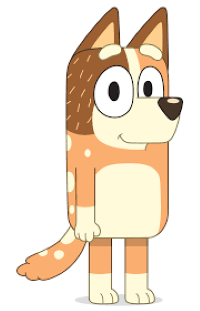

Bluey
Bluey is an inexhaustible blue heeler puppy, who lives with her mum, dad and little sister Bingo. She likes to laugh and have fun but more than anything else she loves to play games with her family.
Bandit
Bandit is an archaeologist (he loves to dig up bones) and he does his best to use whatever energy is left after interrupted sleep, work and household chores, to invent and play games with his two little girls.

Chilli
Chilli is Bluey and Bingos mum! Shes really good at teaching her girls about the world and how to navigate its challenges. She needs to remain level-headed when the Heeler house gets out of control or caught up in a new game!